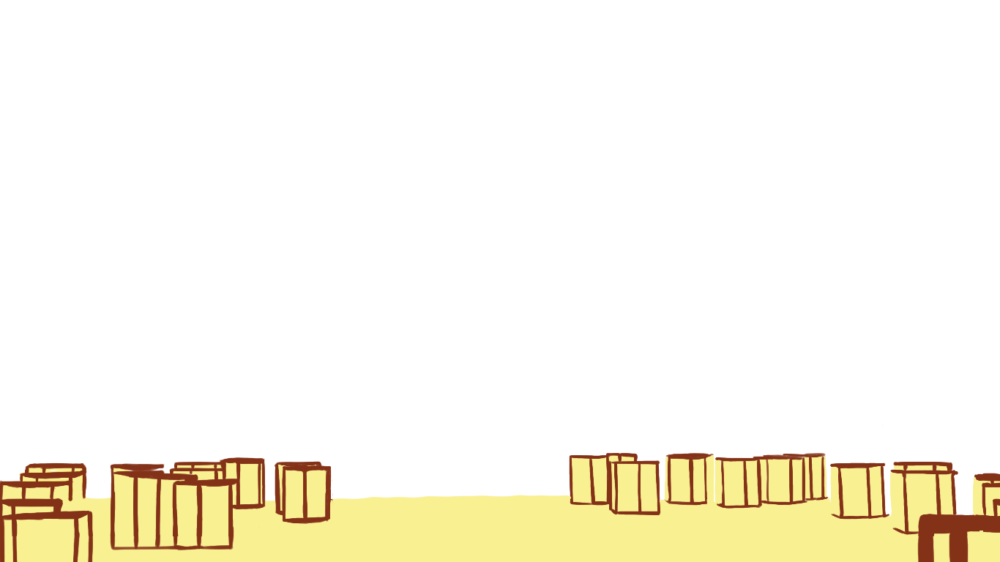
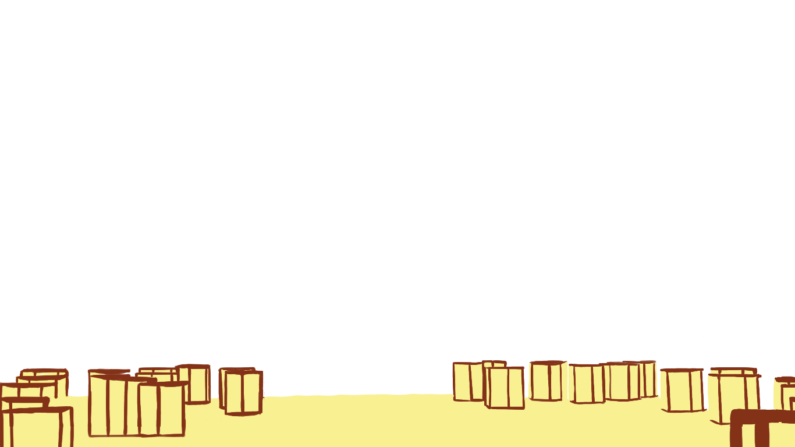

Nora
Olen vaatanud animet väiksest peale ja pole veel lõpetanud :D Mulle meeldivad sügava sisuga lood ja hästi kirjutatud tegelased. Selle aasta lemmikud on olnud Frieren ja The Apothecary Diaries. Mõlemas animes on peategelased huvitavate iseloomudega ning mulle meeldib, kuidas nende iseloome ja motivatsioone järk-järgult tutvustatakse. Visuaalne stiil on samuti oluline ning nende mõlema anime kunstiline lähenemine meeldib mulle väga. Minu kõigi aegade lemmik on siiski Jujutsu Kaisen, kust pärineb ka minu lemmiktegelane Nanami Kento. Rohkem polegi midagi öelda – ta on lihtsalt väga "lahe".